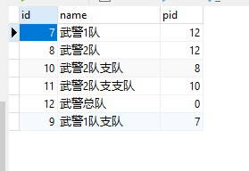
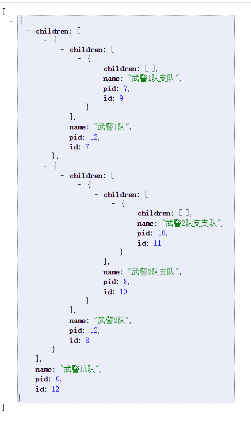

果然书到用时方恨少，学数据结构的时候，多刷几道一样的题，什么树啊图啊什么的题目，洋洋洒洒就写出来，但是等实际生产中却是如此僵硬，刚完成了一个需求，一个部门的层次展示，其实也不难，无非数据库双亲表示，获得list后转换成json树，或许是没找到什么轮子，我想应该是有的吧，反正手撸才能明显感觉到自己算法的实际水平低的可怕，希望有空能多练练。。
需求：双亲表示法的mysql数据表

需要编写一个接口返回如下json

1、拿到数据表的list
本文主要讲怎么转换，怎么拿数据就不说了，反正现在你已经拿到了
List<Department> departmentlist= ××××××××××××.listAll();2、pom.xml
在java中list与json的转换有很多包，这里使用 net.sf.json,需要如下几个依赖一起
<!-- JSONObject对象依赖的jar包 -->
<dependency>
<groupId>commons-beanutils</groupId>
<artifactId>commons-beanutils</artifactId>
<version>1.9.3</version>
</dependency>
<dependency>
<groupId>commons-collections</groupId>
<artifactId>commons-collections</artifactId>
<version>3.2.1</version>
</dependency>
<dependency>
<groupId>commons-lang</groupId>
<artifactId>commons-lang</artifactId>
<version>2.6</version>
</dependency>
<dependency>
<groupId>commons-logging</groupId>
<artifactId>commons-logging</artifactId>
<version>1.1.1</version>
</dependency>
<dependency>
<groupId>net.sf.ezmorph</groupId>
<artifactId>ezmorph</artifactId>
<version>1.0.6</version>
</dependency>
<dependency>
<groupId>net.sf.json-lib</groupId>
<artifactId>json-lib</artifactId>
<version>2.2.3</version>
<classifier>jdk15</classifier><!-- 指定jdk版本 -->
</dependency>3、核心算法代码
/**
* 构造目录JSON树
*/
public class TreeBuilder {
List<Department> nodes = new ArrayList<>();
public String buildTree(List<Department> nodes) {
TreeBuilder treeBuilder = new TreeBuilder(nodes);
return treeBuilder.buildJSONTree();
}
public TreeBuilder() {
}
public TreeBuilder(List<Department> nodes) {
super();
this.nodes = nodes;
}
// 构建JSON树形结构
public String buildJSONTree() {
List<Department> nodeTree = buildTree();
JSONArray jsonArray = JSONArray.fromObject(nodeTree);
return jsonArray.toString();
}
// 构建树形结构
public List<Department> buildTree() {
List<Department> treeNodes = new ArrayList<>();
List<Department> rootNodes = getRootNodes();
for (Department rootNode : rootNodes) {
buildChildNodes(rootNode);
treeNodes.add(rootNode);
}
return treeNodes;
}
// 递归子节点
public void buildChildNodes(Department node) {
List<Department> children = getChildNodes(node);
if (!children.isEmpty()) {
for (Department child : children) {
buildChildNodes(child);
}
node.setChildren(children);
}
}
// 获取父节点下所有的子节点
public List<Department> getChildNodes(Department pnode) {
List<Department> childNodes = new ArrayList<>();
for (Department n : nodes) {
if (pnode.getId().equals(n.getPid())) {
childNodes.add(n);
}
}
return childNodes;
}
// 判断是否为根节点
public boolean rootNode(Department node) {
boolean isRootNode = true;
for (Department n : nodes) {
if (node.getPid()==n.getId()) {
isRootNode = false;
break;
}
}
return isRootNode;
}
// 获取集合中所有的根节点
public List<Department> getRootNodes() {
List<Department> rootNodes = new ArrayList<>();
for (Department n : nodes) {
if (rootNode(n)) {
rootNodes.add(n);
}
}
return rootNodes;
}
}
4、使用
String json = new TreeBuilder().buildTree(departmentlist);返回json即可